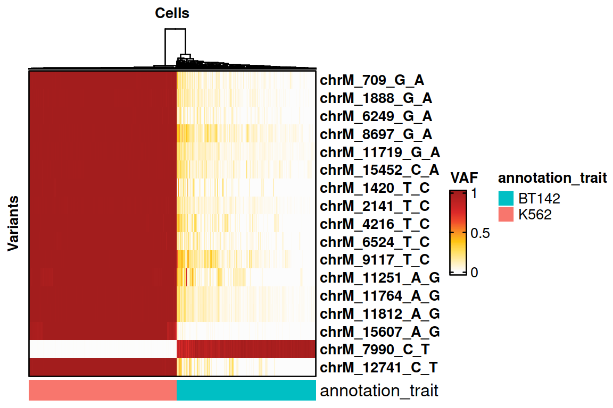
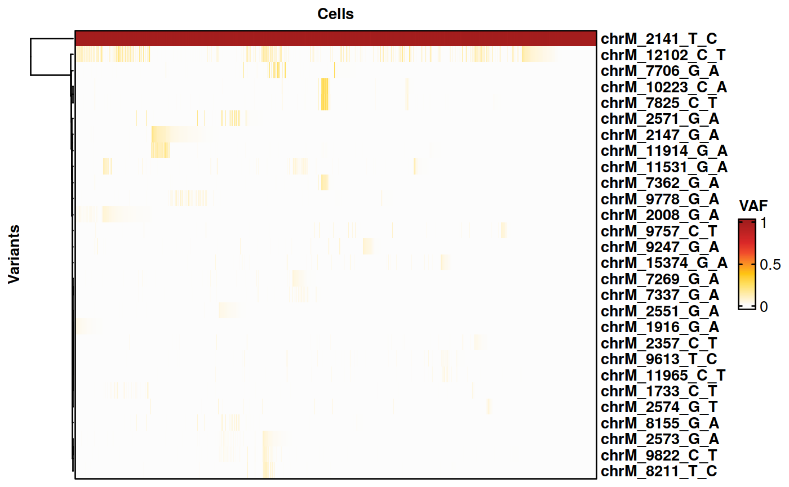

Cell Mixture Experiment using 10X Genomics Sequencing
TenX_CellMixture_SIGURD.RmdCell Mixture Experiment using 10X Genomics Sequencing
Here, we reproduce the analysis of a cell mixture experiment.
Loading necessary packages.
We load the data from MAESTER.
print("Libraries for SIGURD.")## [1] "Libraries for SIGURD."We load the Seurat object for the scRNA-seq data.
seu <- readRDS("/data/MPN/exp/scRNA/MPN_mutations/SIGURD_paper/sigurd/data/TenX_CellLineMix_Seurat_Keep_Renamed.rds")Loading the data using SIGURD.
# The design matrix contains information for the genotyping data.
genotyping <- LoadingMAEGATK_typewise(patient = "TenX", samples_file = "/data/MPN/exp/scRNA/MPN_mutations/SIGURD_paper/sigurd/data/MAESTER_Reproduction.csv", min_cells = 0, type_use = "Amplicon_MT", verbose = FALSE)
# Removing cells that are not in the Seurat object.
genotyping <- Filtering(genotyping, cells_include = colnames(seu))## [1] "We remove all cells not in the allow list."
## [1] "We remove all the variants that are always NoCall."
# Adding meta data do the SIGURD object.
colData(genotyping)$CellType <- seu$CellTypeSelecting the Variants of Interest
# Selecting informative variants.
voi.ch.sigurd <- VariantSelection_Quantile(genotyping, min_coverage = 20, min_quality = 30, quantiles = c(0.1, 0.9), thresholds = c(0.1, 0.9), verbose = FALSE)
print(voi.ch.sigurd)## [1] "chrM_709_G_A" "chrM_1888_G_A" "chrM_6249_G_A" "chrM_8697_G_A"
## [5] "chrM_11719_G_A" "chrM_15452_C_A" "chrM_1420_T_C" "chrM_2141_T_C"
## [9] "chrM_4216_T_C" "chrM_6524_T_C" "chrM_9117_T_C" "chrM_11251_A_G"
## [13] "chrM_11764_A_G" "chrM_11812_A_G" "chrM_15607_A_G" "chrM_7990_C_T"
## [17] "chrM_12741_C_T"Visualisation using SIGURD
# Determining if a cell is supporting one of the two cell types.
cell_support <- CallSupport(SE = genotyping, VOI_group1 = voi.ch.sigurd[voi.ch.sigurd != "chrM_7990_C_T"], VOI_group2 = "chrM_7990_C_T", group1_name = "K562", group2_name = "BT142", min_mutated_reads = 3, min_reads = 30, group_factor = c(10,2), verbose = FALSE)
genotyping <- Filtering(genotyping, cells_include = cell_support$Cell)## [1] "We remove all cells not in the allow list."
## [1] "We remove all the variants that are always NoCall."
colData(genotyping)$CellType_MT <- cell_support$Support
cell_support <- subset(cell_support, Support %in% c("K562", "BT142")) # Selecting only cells with sufficient support for a set of variants.
# Plotting the results on a heatmap.
HeatmapVoi(SE = genotyping, voi = voi.ch.sigurd, annotation_trait = "CellType", minimum_coverage = 3)
Selecting variants with comparatively high VAF between groups
We now select variants with a higher VAF in the K562 cells than in the BT142 cells.
voi.ch.lineages <- sigurd::VariantSelection_Group(SE = genotyping, min_coverage = 100, quantiles = c(0.01, 0.99), thresholds = c(0.01, 0.02), min_quality = 30,
group_of_interest = "CellType_MT", group1 = "K562", group2 = "BT142", group_factor = 5, remove_nocall = FALSE, verbose = FALSE)
voi.ch.lineages <- voi.ch.lineages[!voi.ch.lineages %in% c("chrM_8251_G_A", "chrM_7693_C_T")] # These variants are not detected in the bulk data and were removed by hand.
voi.ch.lineages <- c(voi.ch.lineages, "chrM_2141_T_C") # Adding a homoplasmic variant as positive control.
print(voi.ch.lineages)## [1] "chrM_1916_G_A" "chrM_2008_G_A" "chrM_2147_G_A" "chrM_2551_G_A"
## [5] "chrM_2571_G_A" "chrM_2573_G_A" "chrM_7269_G_A" "chrM_7337_G_A"
## [9] "chrM_7362_G_A" "chrM_7706_G_A" "chrM_8155_G_A" "chrM_9247_G_A"
## [13] "chrM_9778_G_A" "chrM_10223_C_A" "chrM_11531_G_A" "chrM_11914_G_A"
## [17] "chrM_15374_G_A" "chrM_8211_T_C" "chrM_9613_T_C" "chrM_1733_C_T"
## [21] "chrM_2357_C_T" "chrM_2574_G_T" "chrM_7825_C_T" "chrM_9757_C_T"
## [25] "chrM_9822_C_T" "chrM_11965_C_T" "chrM_12102_C_T" "chrM_2141_T_C"
# Plotting the results on a heatmap.
cell_support <- subset(cell_support, Support == "K562") # Only plotting K562 cells.
genotyping <- Filtering(genotyping, cells_include = cell_support$Cell, verbose = FALSE)
HeatmapVoi(SE = genotyping, voi = voi.ch.lineages, minimum_coverage = 3, sort_cells = TRUE, cluster_variants = TRUE)